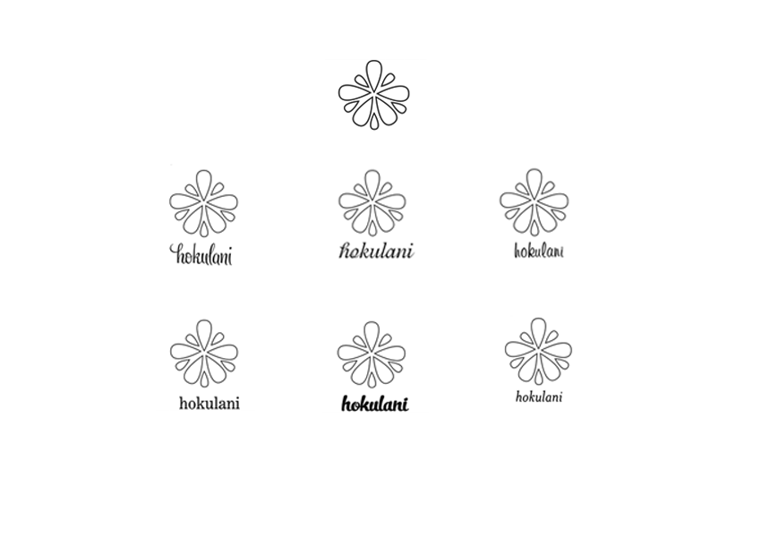
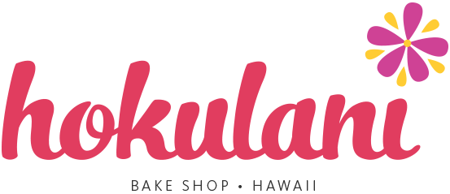
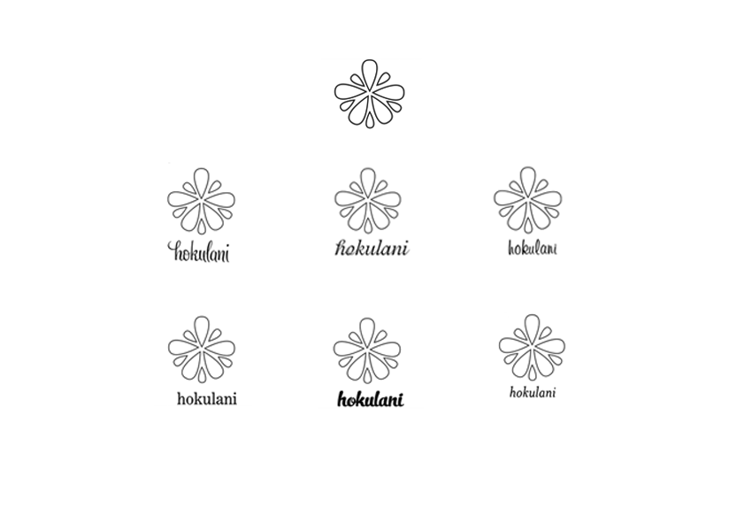
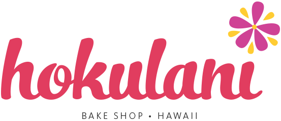

logos
Hokulani Bake Shop was founded in November 2005 by husband and wife team Tushar and Ana Dubey. There are currently four locations on Oahu.
Hokulani finds inspiration through the culture, aloha spirit, and lifestyle while priding themselves in creating their cupcakes from scratch with using real ingredients. (i.e., no margine or corn syrup.) Hokulani means ‘heavenly star.’
Keeping the star concept in mind, I also liked the idea of an island concept. I looked at the Bahamas’ logo for inspiration. I also started sketching ideas flowers without being too cliché.





Surprisingly, my mentor was very drawn to the flower/star shape. “There is something nice about the asymmetry of the petals,” he said. Together we collaborated and came up with this idea.


The logo with the colors I originally chose.

There wasn't enough contrast in my logo so I had to go darker. My mentor said to play with dark purple and yellow-orange but it reminded me too much of certain sports teams, so he told me to explore more with color.
Final logos:

Hokulani finds inspiration through the culture, aloha spirit, and lifestyle while priding themselves in creating their cupcakes from scratch with using real ingredients. (i.e., no margine or corn syrup.) Hokulani means ‘heavenly star.’
Keeping the star concept in mind, I also liked the idea of an island concept. I looked at the Bahamas’ logo for inspiration. I also started sketching ideas flowers without being too cliché.

Surprisingly, my mentor was very drawn to the flower/star shape. “There is something nice about the asymmetry of the petals,” he said. Together we collaborated and came up with this idea.
The logo with the colors I originally chose.
There wasn't enough contrast in my logo so I had to go darker. My mentor said to play with dark purple and yellow-orange but it reminded me too much of certain sports teams, so he told me to explore more with color.
Final logos:

Website